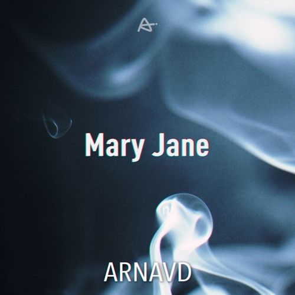

Mary Jane
Single • 2018

My first try at bass music, Mary Jane, is a slow Bass House / G-House song with urban vocals and a bassline-oriented melody. My main inspiration for this song (mainly for the bassline) was "No Joy" by Valy Mo.
For the cover art, I wanted something simple with a big title and a picture background. I decided to use some smoke for the background because of the name "Mary Jane", and I only put some chromatic aberration on the name. My main inspiration was "Disrupted" by Jay Dunham.
For the cover art, I wanted something simple with a big title and a picture background. I decided to use some smoke for the background because of the name "Mary Jane", and I only put some chromatic aberration on the name. My main inspiration was "Disrupted" by Jay Dunham.
Length: 3:50 BPM: 125 Key: ??